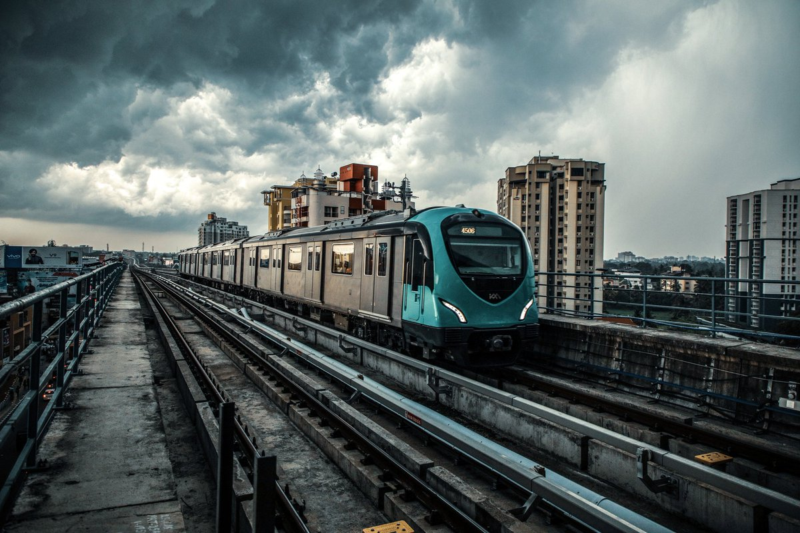
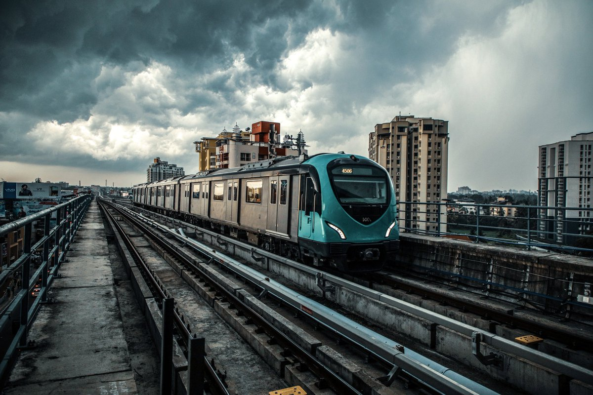

ERNAKULAM
Ernakulam is the central district in Kerala and is home to its financial and industrial capital, Kochi. The district is considered as the economic and political hub of Kerala. The Cochin Stock Exchange, Kerala Municipal Corporation and Kerala High Court also fall within this district. While it is the most industrial area in Kerala, it also boasts of wonderful tourist attractions that connect man to nature and God. Keeping a strong balance between nature, faith and industry, Ernakulam remains the heart of Kerala.

 

1. CHERAI BEACH

Located on the north end of Vypin island in Kochi, Cherai beach is a 15 km stretch of wild and rugged beauty. Although not overwhelmed by hotels or major restaurants, the beach is dotted with small shacks selling local snacks like pakoras and chips. Stunning lagoons, wide paddy fields and coconut grooves adorn the road to the beach. Ernakulam sightseeing is not complete without a visit to Cherai beach.
2. MUSEUM OF MATTANCHERRY

A stroll through the lanes of Fort Kochi will definitely attract you to the rustic and old-fashioned neighbourhood of Mattancherry. It is said that back in the days, this cheri (street), was lined with mutton butchers, and so it ended up being called “Muttoncherry” which over the years evolved into “Mattancherry”. Today the place exhibits centuries-old architectures and various social and cultural imprints left behind by foreigners. Declared as a heritage site by the government, Mattancherry has been an inspiration to historians, film-makers, travellers and artistes alike. Amongst all the Ernakulam tourist places, this museum is one of the most prominent attractions.
3. THATTEKAD BIRD SANCTUARY

One of the first bird sanctuaries in Kerala and undeniably a haven for nature enthusiasts. In the words of Salim Ali (world famous ornithologist), Thattekkad is the “richest bird sanctuary in India” since it is home to hundreds of different endangered species of migratory birds. This thick deciduous forest has plantations of mahogany, teak, rosewood and rubber running through it. Make sure to bring along a pair of binoculars to get a glimpse of the birdlife. The best time to visit would be between November and March.
4. HILL PALACE

Hill Palace is a prominent Heritage museum, which exhibits countless archaeological relics and belongings of the Maharaja of Kochi. This famous palace, which was built in 1865, comprises forty-nine buildings with enchanting gardens and a children’s park. It is opened to the public from 9 AM to 12 noon and from 2 PM to 4: 30 PM. Of all the majestic Ernakulam tourist places, Hill Palace is certainly one of the top attractions.